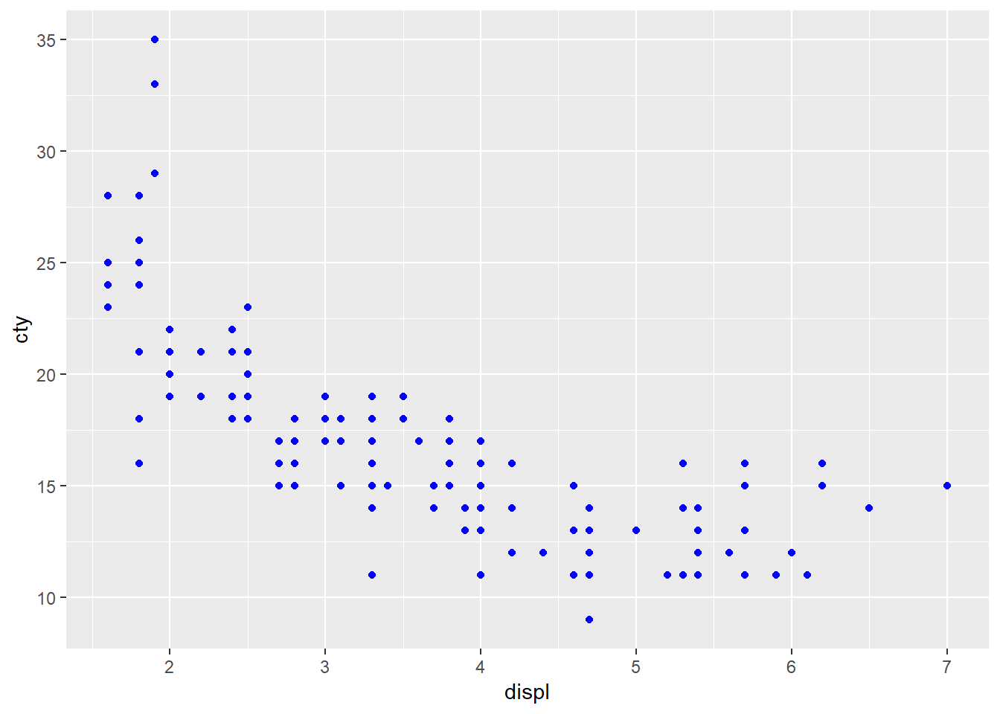
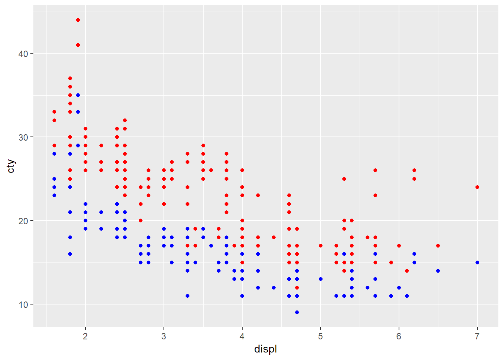
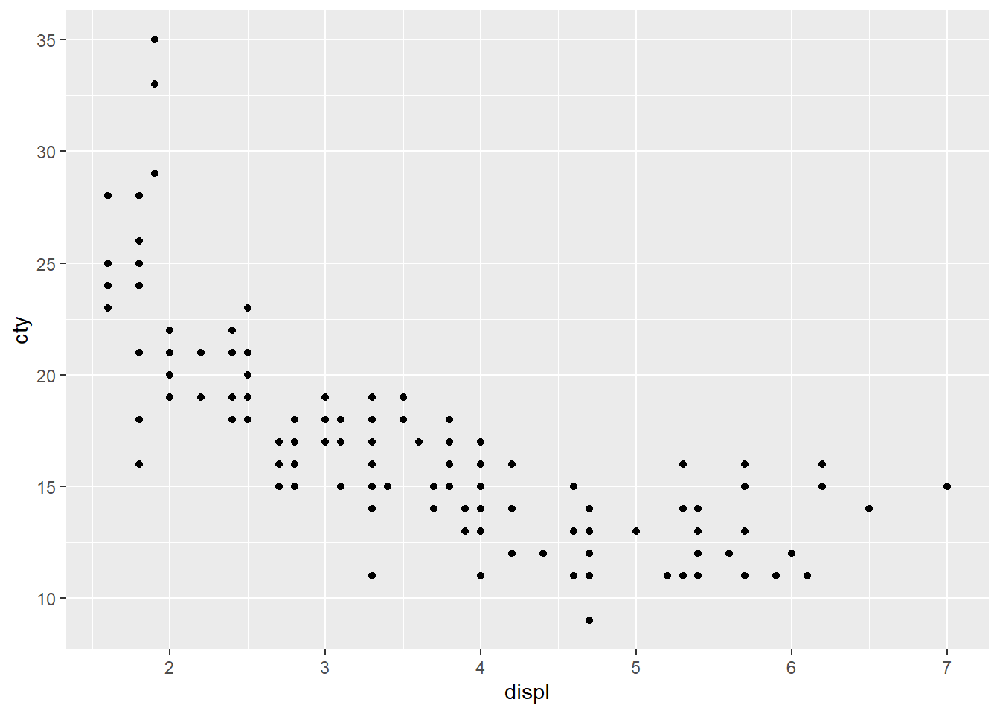
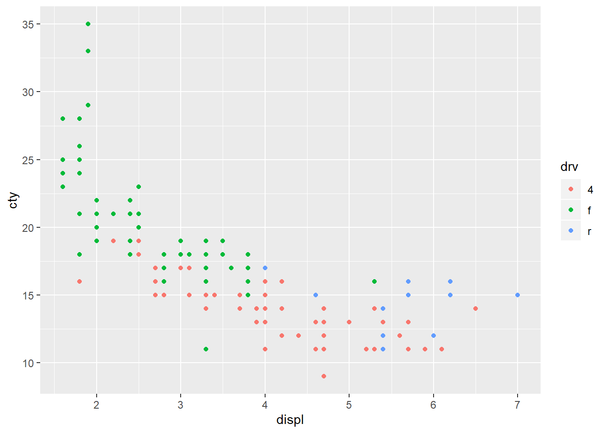
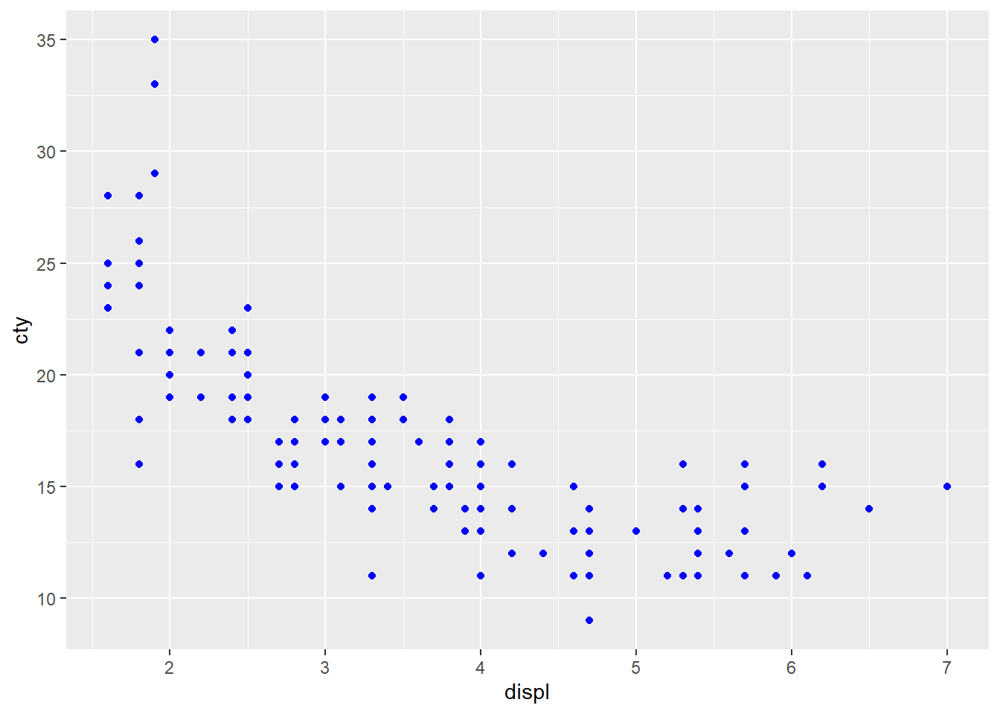

Hoofdstuk 4 GGPlot
We beginnen met een korte inleiding tot GGplot waarin we trachten de principes uit te leggen. We zullen GGPlot verder uitdiepen in de beschrijvende data analyse.
GGplot is een soort grammatica waarmee je een grafiek kan opdelen in verschillende elementen die onafhankelijk zijn van elkaar. De belangrijkste elementen van deze grammatica zijn:
- Data
- Geometrische objecten (geoms)
- Esthetische kenmerken (van geometrische objecten) (aesthetics)
- Lagen (layers)
Alles begint met data. Dit bevat de informatie die je wilt visualiseren en ggplot verwacht deze data als een data.frame object. Door het kiezen van een specifiek geometrisch object bepaal je hoe je de data wenst te visualeren, bijvoorbeeld als een punt (point), een lijn (line), een boxplot (boxplot) of als balken (bar).
Ieder geometrisch object heeft een aantal esthetische kenmerken, zoals bijvoorbeeld de kleur (color), de grootte (size) of de vorm (shape). Twee esthetische kenmerken die misschien niet onmiddellijk als esthetisch worden beschouwd, maar wel zeer belangrijk zijn, zijn de x- en y-coördinaat.
GGplot linkt de data met het geometrisch object door kolommen/variabelen te mappen aan de esthetische kenmerken van een geometrisch object. Je gaat tegen GGplot zeggen welke 2 variabelen (= kolommen in je data.frame) de x- en y-coördinaat van iedere observatie (= rij in data.frame) voorstellen.
Iedere mapping tussen data en het geometrisch object vormt een layer. Een layer kan je zien als een transparant blad, dat bovenop het assenstelsel gelegd wordt, en waarop een ‘grafiek’ staat. Een volledige grafieke (plot) kan uit meerdere layers bestaan die boven op elkaar liggen.
Laten we deze principes eens illustreren met een concreet voorbeeld. Hiervoor laden we de mpg data set die standaard in ggplot2 zit.
data(mpg)
glimpse(mpg)## Observations: 234
## Variables: 11
## $ manufacturer <chr> "audi", "audi", "audi", "audi", "audi", "audi", "...
## $ model <chr> "a4", "a4", "a4", "a4", "a4", "a4", "a4", "a4 qua...
## $ displ <dbl> 1.8, 1.8, 2.0, 2.0, 2.8, 2.8, 3.1, 1.8, 1.8, 2.0,...
## $ year <int> 1999, 1999, 2008, 2008, 1999, 1999, 2008, 1999, 1...
## $ cyl <int> 4, 4, 4, 4, 6, 6, 6, 4, 4, 4, 4, 6, 6, 6, 6, 6, 6...
## $ trans <chr> "auto(l5)", "manual(m5)", "manual(m6)", "auto(av)...
## $ drv <chr> "f", "f", "f", "f", "f", "f", "f", "4", "4", "4",...
## $ cty <int> 18, 21, 20, 21, 16, 18, 18, 18, 16, 20, 19, 15, 1...
## $ hwy <int> 29, 29, 31, 30, 26, 26, 27, 26, 25, 28, 27, 25, 2...
## $ fl <chr> "p", "p", "p", "p", "p", "p", "p", "p", "p", "p",...
## $ class <chr> "compact", "compact", "compact", "compact", "comp...De variabele ‘displ’ stelt de cilinderinhoud voor (in liters), terwijl de variabelen ‘cty’ en ‘hwy’ het aantal kilometers per gallon voorstellen in respectievelijk een stedelijke omgeving of op de autostrade. Iedere observatie stelt een automodel voor in de periode 1999 en 2008.
Veronderstel nu dat we het verband willen visualiseren tussen de cilinderinhoud en het verbruik in de stand. Een eerste mogelijkheid is dit verband te visualiseren als punten waarbij de x-coördinaat overeenkomt met de cilinderinhoud (‘displ’) en de y-coördinaat overeenkomt met het stadsverbruik (‘cty’). De ggplot code ziet er dan als volgt uit:
ggplot()+layer(data=mpg,
mapping = aes(x = displ, y = cty),
geom="point",
stat="identity",
position="identity")Zoals je ziet wordt er een layer gecreëerd waarbij:
- we aangeven dat mpg het te gebruiken data.frame is,
- de mapping gebeurt door de esthetische kenmerken ‘x’ en ‘y’ te koppelen aan respectievelijk de kolommen ‘displ’ en ‘cty’ en
- de observaties weergegeven dienen te worden als punten.
Laten we nog een ander esthetisch kenmerk van het punten-object mappen, nl. de kleur. We willen nu dat de kleur varieert naargelang de auto voorwiel-, achterwiel- of vierwiel-aandrijving heeft.
ggplot()+layer(data=mpg,
mapping = aes(x = displ, y = cty, colour=drv),
geom="point",
stat="identity",
position="identity")We kunnen esthetische kenmerken niet enkel mappen aan variabelen uit data (waardoor het esthetisch kenmerk gaat variëren naargelang de waarde van de variabele), maar ook vastleggen op een constante waarde (dit wordt dan ook ‘setten’ genoemd ipv ‘mappen’). Laten we de kleur bijvoorbeeld vastleggen op een blauwe kleur. Merk op dat het instellen van de kleur nu buiten de aes()-functie gebeurt aangezien dit geen mapping is!
ggplot()+layer(data=mpg,
mapping = aes(x = displ, y = cty),
params=list(color="blue"),
geom="point",
stat="identity",
position="identity")
Tot dusver bestond iedere grafiek uit slechts 1 laag (layer), maar laten we nu een tweede laag aan de grafiek toevoegen die ook het verbruik op de autostrade weergeeft. We doen dit door een twee layer-object toe te voegen.
ggplot()+
layer(data=mpg,
mapping = aes(x = displ, y = cty),
params=list(colour="blue"),
geom="point",
stat="identity",
position="identity") +
layer(data=mpg,
mapping = aes(x = displ, y= hwy),
params=list(colour="red"),
geom="point",
stat="identity",
position="identity")
Bovenstaande grafiek bestaat dus eigenlijk uit twee grafieken die ‘over elkaar’ zijn gelegd. Merk op dat het in principe niet nodig is dat beide layers gebaseerd zijn op dezelfde data.
Bovenstaande code kan op verschillende vormen sterk vereenvoudigd worden. Ten eerste kan je alle kenmerken die lagen gemeenschappelijk hebben reeds definiëren in de ggplot()-functie.
ggplot(data=mpg, mapping=aes(x=displ)) +
layer(mapping = aes(y=cty), params=list(colour="blue"), geom="point", stat="identity", position="identity")+
layer(mapping = aes(y=hwy), params=list(colour="red"), geom="point", stat="identity", position="identity")
Een volgende vereenvoudiging komt voort uit het feit dat ggplot veronderstelt dat de eerste parameter de data voorstelt en de tweede parameter de mapping voorstelt. Daarom is het niet noodzakelijk dit expliciet te vermelden. Dit geeft volgende code.
ggplot(mpg, aes(x=displ)) +
layer(mapping = aes(y=cty), params=list(colour="blue"), geom="point", stat="identity", position="identity")+
layer(mapping = aes(y=hwy), params=list(colour="red"), geom="point", stat="identity", position="identity")
Verder bestaan er ‘shortcuts’ voor layers van een specifiek geometrisch objecttype. De naam van deze ‘shortcuts’ beginnen steeds met ‘geom_’ gevolgd door het geometrisch objecttype. Als je deze ‘shortcuts’ gebruikt, hoef je ook niet meer expliciet te vermelden dat het eerste element de mapping voorstelt.
ggplot(mpg, aes(x=displ)) +
geom_point(aes(y=cty), colour="blue") +
geom_point(aes(y=hwy), colour="red")
Bovenstaande code is zoals je ze in het verdere verloop van deze tutorial zal tegenkomen. Om je inzicht in de werking van GGplot verder uit te diepen, raden we je aan om hoofdstuk “The ggplot2 Plotting System: Part 2” uit het boek “Exploratory Data Analysis with R” van Roger D. Peng te lezen.